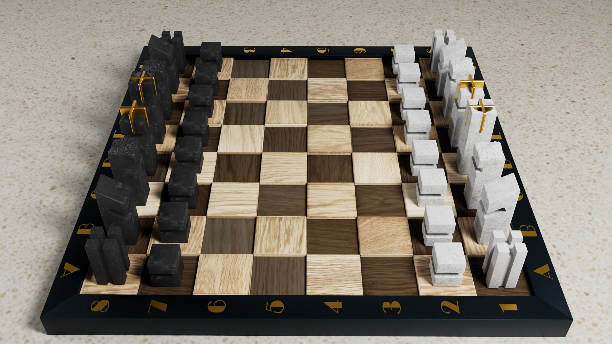

CHESS



Schachspiel - durch klare Formen und hochwertige Materialien entsteht ein modernes und zeitloses Erscheinungsbild.
Das Spielbrett aus gebeizten Holzquadern in hellen und dunklen Tönen erzeugt durch leichte Höhenversprünge Spannung und Tiefe. Umrahmt wird das Brett von einem anthrazitfarbenen Metallrahmen. Bronzierte Lettern markieren die Spielfelder und setzen gleichzeitig einen eleganten Akzent. Die Schachfiguren wurden aus Naturstein (Quarzit) modelliert – Quarzit Nero für die schwarzen und Quarzit Bianco für die weißen Figuren.
König und Königin sind zusätzlich mit bronzenen Details versehen, eine gestalterische Verbindung zur Materialität der Spielfeldbeschriftung. Der Kontrast aus harten (Stein, Metall) und weichen (Holz) Materialien sorgt für ein spannendes wie harmonisches Gesamtbild.
Bildkompositorisch bietet die Gesamtansicht eine sachliche Übersicht des gesamten Spielbretts mitsamt aller Figuren, wohingegen die In-game Perspektive eine typische Eröffnungssituation des Spiels zeigt.
Unterstützt durch den gezielten Einsatz von Tiefenschärfe wird die Komplexität der Szene reduziert und der Fokus auf das Wesentliche gelenkt. Die Makroaufnahme setzt hingegen den Fokus auf die Wiedergabe der Materialität und Geometrie.
Projekt an der OFG
Tools: 3Ds Max & Arnold